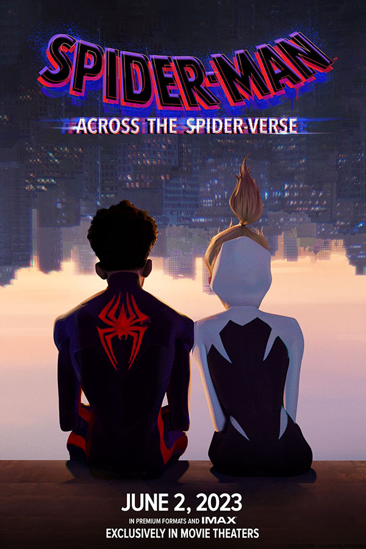

SINOPSE
Homem-Aranha: Através do Aranhaverso, é a continuação do vencedor do Oscar Homem-Aranha: No Aranhaverso, de 2018, que acompanha Miles Morales (Shameik Moore), o simpático Homem-Aranha do Brooklyn. Neste novo capítulo, Miles está de volta para uma nova missão em sua agitada vida como super herói. No novo filme, Morales é transportado para uma aventura épica através do multiverso, e deve unir forças com a mulher-aranha Gwen Stacy (Hailee Steinfeld) e um novo time de Pessoas-Aranha, formado por heróis de diversas dimensões. No entanto, tudo muda quando os heróis entram em conflito sobre como lidar com uma nova ameaça, e Miles se vê em um impasse. E para piorar ainda mais a situação, eles precisam enfrentar um vilão muito mais poderoso do que qualquer coisa que já tenham encontrado antes. Agora, para salvar as pessoas que ele mais ama no mundo, Miles deve redefinir o que significa ser um super herói.
RESENHA
"Homem-Aranha Através do Aranhaverso", lançado em 2023, é uma obra-prima animada que redefine o gênero dos super-heróis. Dirigido por Phil Lord e Christopher Miller, o filme apresenta uma história envolvente e emocionante, que acompanha Miles Morales, um adolescente do Brooklyn, que se torna o Homem-Aranha de sua realidade e descobre a existência de múltiplos universos paralelos, cada um com sua própria versão do herói. A animação é deslumbrante, combinando técnicas inovadoras com um estilo de arte vibrante e dinâmico que faz jus à rica tradição das histórias em quadrinhos do Homem-Aranha. Além de Miles, somos apresentados a uma variedade de outros Homens-Aranha, incluindo Peter Parker, Gwen Stacy e até mesmo o porco falante, Peter Porker. A trama equilibra habilmente a ação empolgante com momentos tocantes de desenvolvimento de personagens, explorando temas de identidade, responsabilidade e amadurecimento. A trilha sonora é pulsante e energética, complementando perfeitamente o ritmo frenético do filme. "Homem-Aranha Através do Aranhaverso" é uma verdadeira celebração do legado do Homem-Aranha e uma obra-prima do cinema de animação que cativará tanto os fãs de longa data quanto os espectadores casuais.